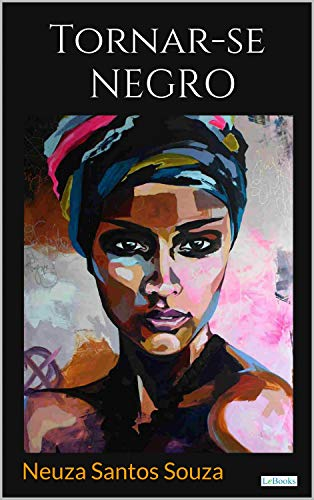

“Uma das formas de exercer autonomia é possuir um discurso sobre si mesmo.”(SOUZA, 1983, p. 17).”
Quem é Neusa?
Neusa Santos Souza (Cachoeira, 1948 - Rio de Janeiro, 20 de dezembro de 2008) foi uma
psiquiatra,
psicanalista e escritora brasileira.
Sua obra é referência sobre os aspectos sociológicos e
psicanalíticos da negritude, inaugurando o debate contemporâneo e analítico sobre o racismo no
Brasil.
Nascida em Cachoeira, Bahia, formou-se em medicina pela Universidade Federal da Bahia e tornou-se
psiquiatra e psicanalista de orientação lacaniana.
Estabeleceu-se no Rio de Janeiro onde
adquiriu o
título de Mestre em Psiquiatria pela Universidade Federal do Rio de Janeiro, conviveu com
intelectuais e
deu importante contribuição na luta contra a discriminação racial.
Sua dissertação de mestrado deu origem à obra Tornar-se negro: as vicissitudes da identidade do negro brasileiro em ascensão social, considerado um marco da psicologia preta no Brasil. Contribuiu também com artigos sobre a psicose e a psicanálise lacaniana.
Apoiada em sua própria experiência e em sua formação psicanalítica ela procura interpretar quais são as trajetórias pessoais, os pressupostos e os desdobramentos desse difícil processo de ascensão social do negro numa sociedade branca.
A produção acadêmica de Neusa Santos é referência para o pensamento da psicologia brasileira sobre relações étnico-raciais, sobre o processo de "branqueamento" e o sofrimento psíquico dos negros na sociedade brasileira. Seu nome é homenageado no Rio de Janeiro, com o Centro de Atenção Psicossocial (CAPS) II Neusa Santos Souza.

Tornar-se Negro
Tornar-se Negro, escrito pela psiquiatra, psicanalista e escritora negra Neusa Santos Souza, é obra de referência no estudo da questão racial no Brasil, e apresenta o estudo teórico e vivencial da autora sobre a vida emocional dos negros. Na obra, Neusa mostra a auto rejeição do negro por seu aspecto exterior e explica que é necessário um raro grau de consciência para que esse quadro se inverta, mas quando isso acontece, a cor e o corpo do negro são sentidos como valor de beleza. Com um texto direto objetivo e recheado de depoimentos, a obra foi publicada inicialmente em 2008 e relançada agora pela LeBooks Editora em função de sua abordagem pioneira e da importância do assunto tratado..
A Psicose
partir do desafio cotidiano da clínica a autora pensa a questão da psicose. Utilizando os registros do Real, Simbólico e Imaginário distinguidos e articulados por Lacan, a psicose é estudada juntamente com as difíceis questões que a acompanham. Depoimentos trazendo a fala do psicótico enriquecem o trabalho, bem como dois novos textos, que apresentam mudanças de perspectiva e reinterpretações da autora.
O objeto da Angústia
<>Os onze artigos que compõem este livro giram em torno do Seminário X, A angústia,
seminário
de Lacan que ocupa um lugar de destaque na psicanálise e no ensino lacaniano por tratar
de
um dos seus conceitos mais originais.
Entrevista Exclusiva
Neusa Santos Sousa no programa Espelho
Meu depoimento
A leitura do livro "Tornar-se Negro" da Neusa foi um divisor de aguas em minha vida. Eu estava em
transição capilar( deixando de
alisar e manter o cabelo natural), e busquei entender a não aceitação do cabelo crespo e tudo
mais.
Com Neusa, eu pude compreender todas as questões de branqueamento, o lugar da mulher
negra e o
eterno enigma da vida de quem é "branco demais para ser negro, negro demais para ser branco".
Recomendo
a leitura para fortalecer nosso processo de identificação ancestral e também para compreender o
aspecto
psiquico dos efeitos do racismo